Guidance that grows with your baby
BumpToBloom is a parenting companion for first-time moms, from pregnancy through age two. I designed the brand and the first product screens, then made the launch videos.
“Is this normal?”
New parents have more information than ever and less certainty. Answers are scattered across search, forums, tracking apps and shopping sites, and most of it ignores how old the baby actually is. We talked with four moms before locking the design direction.
“There’s just a lot of conflicting information. It’s hard to be told different things.”First-time mom, 10-month-old
“I am already overstimulated. Push notifications or constant info could increase my cognitive load, not reduce it.”Mom of two
“Since our daughter is a preemie, we go off her adjusted age, so resources based on her actual age aren’t useful.”First-time mom, 7-month-old
“Ads and sponsored links make it hard to find the actual answers I’m looking for.”Mom of two under three
A logo that grows up with the baby
The mark is a big B holding a little b, parent and child in one letterform. The baby comes from Thumbelina, the tiny girl born from a flower in bloom. Over six rounds the details moved from a lone stem to a swaddled baby resting in the bowl, with a honey tulip in bloom above it.
stem only
child silhouette
honey accent
sleeping baby
warmer palette
two greens + honey
Palette from a nursery, not a hospital
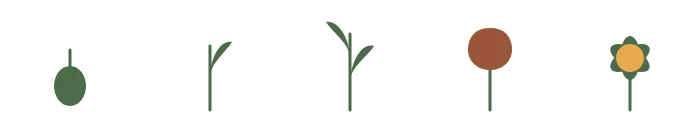
Four choices that came straight from the interviews
Start with where she is
She adds her baby once: a name, a photo and a birth date. Every screen after that is keyed to the baby’s exact month, so Track shows the milestones that matter now and never guidance for the wrong stage.
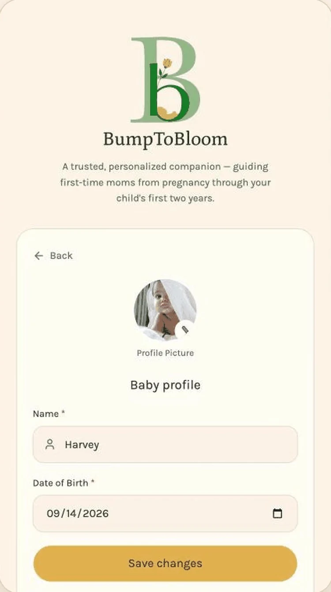
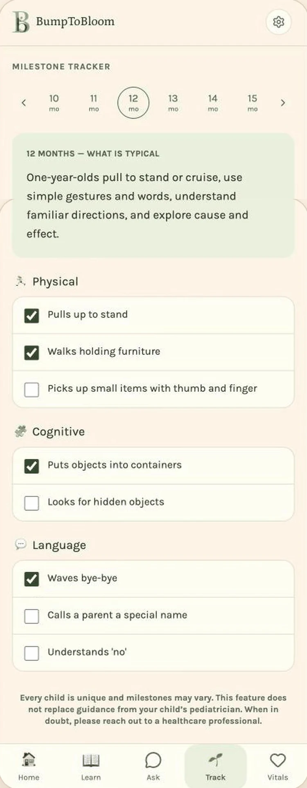
One thing this week, not a feed
Moms told us more content would mean more stress. Home leads with a single “This week, for you” card, and deeper guidance waits in Learn until she asks for it.
- No push-driven content loop
- Bottom tabs and full-width cards for one-thumb use
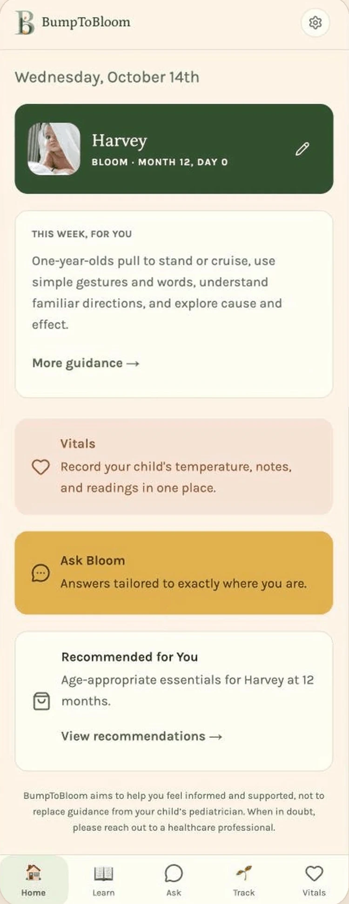
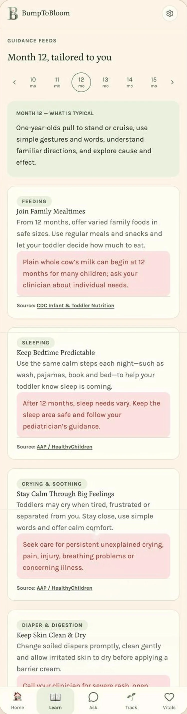
Sources and safety built into the UI
Every guidance card names its source, such as the AAP or CDC. Ask Bloom answers in plain language and lists its sources under each reply, with a standing reminder to call a doctor in an emergency. Vitals keeps temperatures and notes in one place to share with the pediatrician.
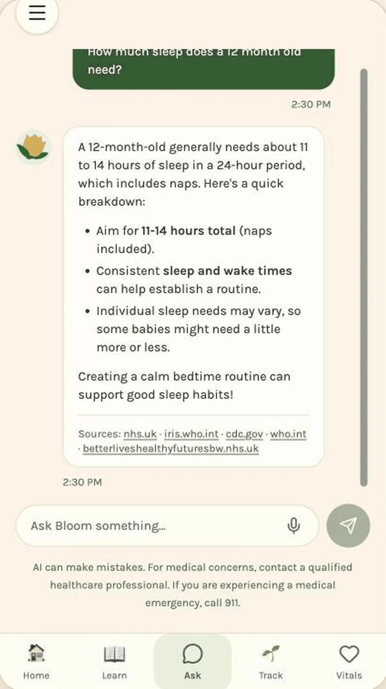
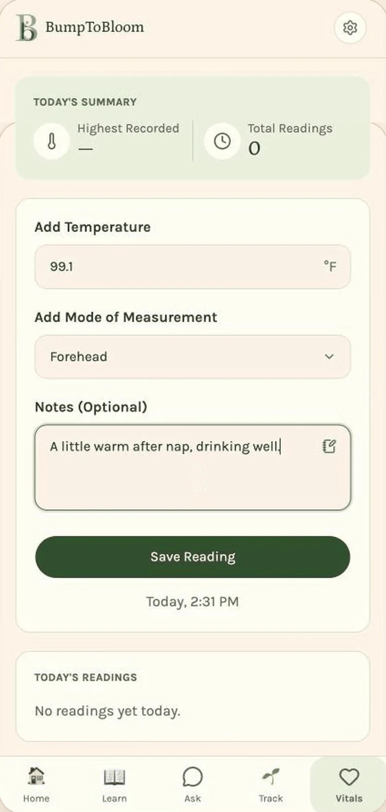
Shopping with a reason
Product picks are tied to her baby’s age, and each one explains why it helps right now. Version one uses affiliate links rather than in-app checkout, which kept the build small and the recommendations honest.
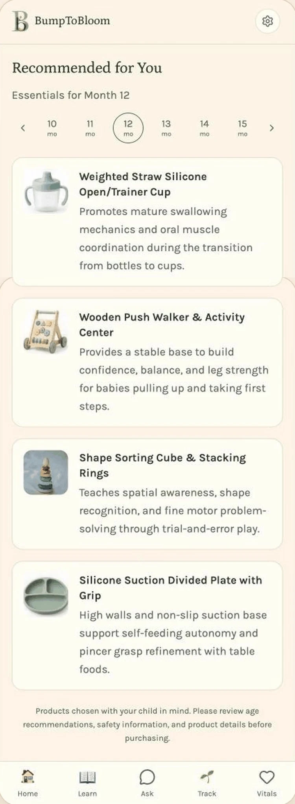
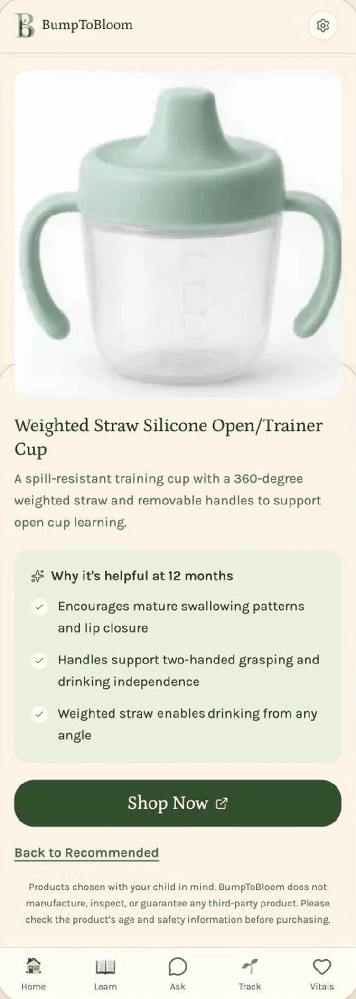
Scroll inside any phone to see the full screen.
Guidance that grows with them
The home screen rewrites itself as the baby gets older. A progress bar from birth to two years shows where she is, and the weekly card speaks to that exact month.
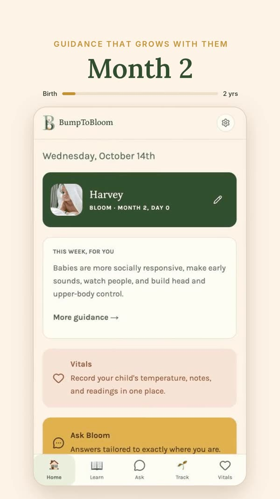
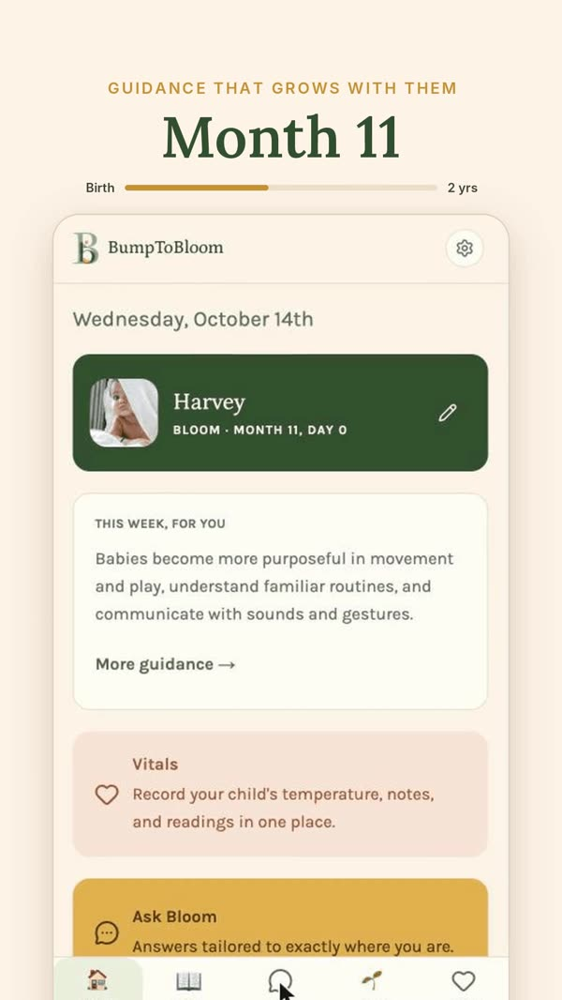
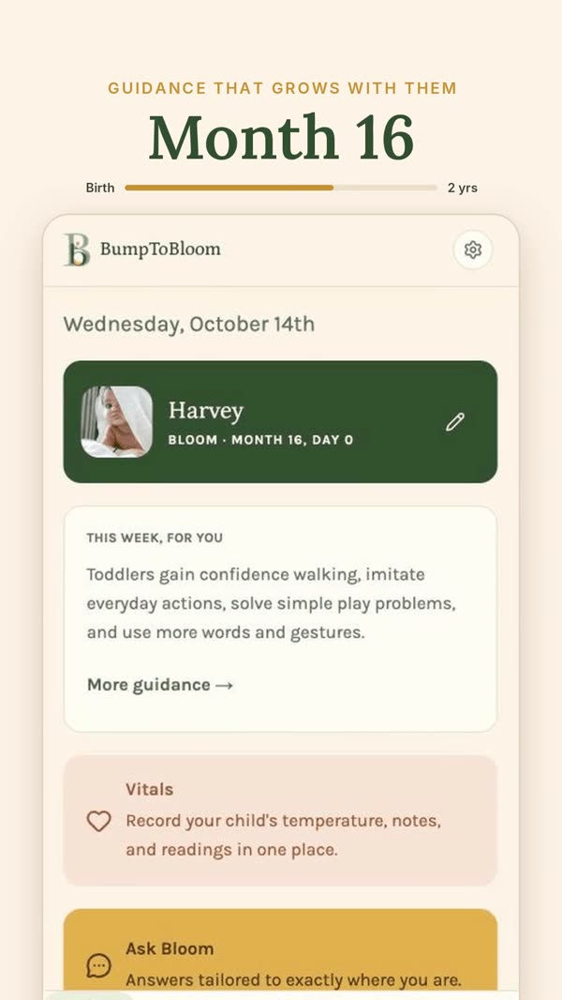
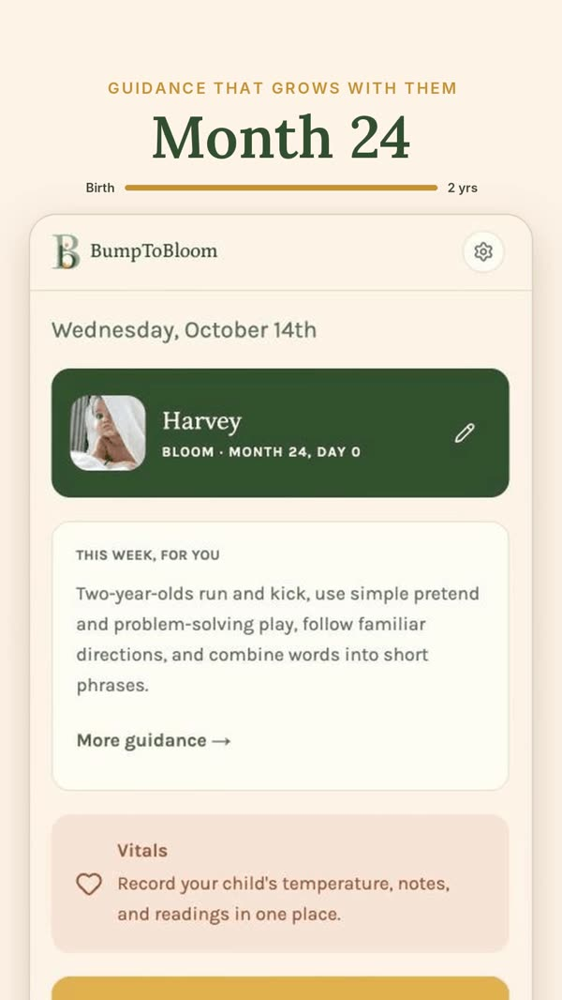
First concepts
My early screens set the visual system: soft cards, stage labels like “Stem · Week 24” and “Bloom · Month 8,” and the honey call to action. Later rounds cut the dashboard density down to one clear card per job.
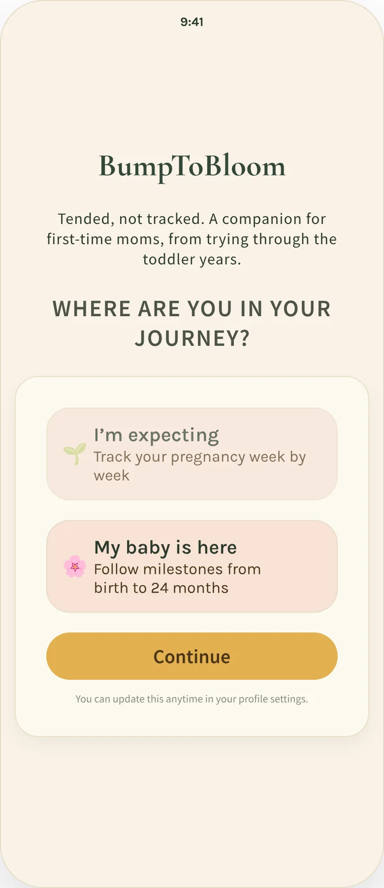
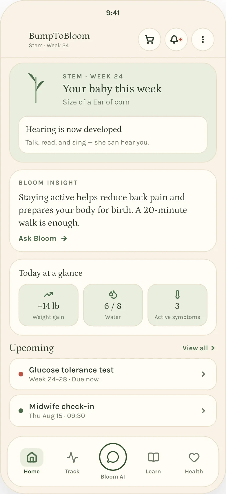
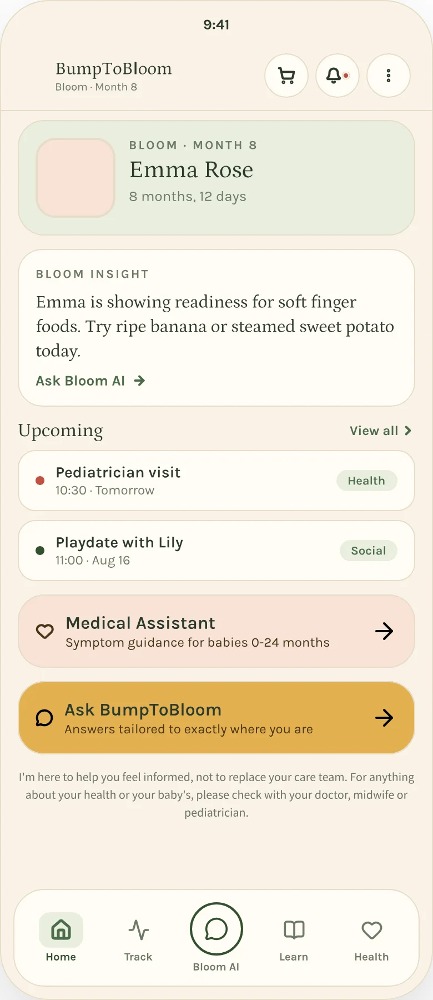
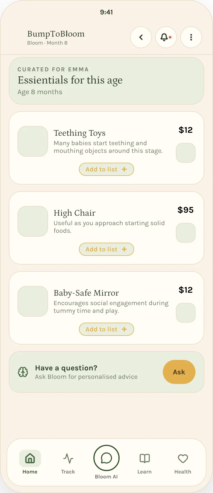
Telling the story in 30 seconds
Short vertical videos for social that move from the 3 AM problem to the product, using the same palette and type as the app. Script, motion and edit by me. Character art was AI-generated for speed; see Beyond the Product for my own illustration.
- Logo and visual identity, from first sketch to final mark
- Color, type and stage glyphs used across the product
- The first round of product screens and the component look
- UI refinements on the core flows
- Launch videos for social: script, motion and edit
- Support adjusted age for preemies, which one mom raised directly
- Test the core flows one-handed, with a baby in the other arm
- Validate Bloom Cart against multi-retailer price comparison
A calm place to land at 3 AM, built to grow from bump to bloom.